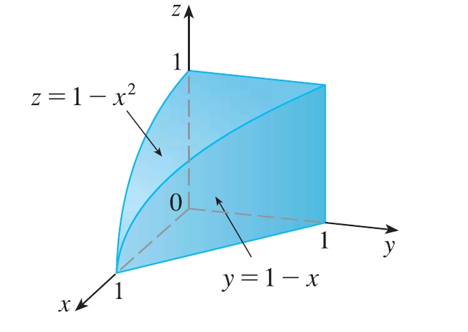

The figure shows the region of integration for the integral \(\int_0^1 \int_0^{1-x^2} \int_0^{1-x} f(x, y, z) dy dz dx\). Rewrite this integral as an equivalent iterated integral in the five other orders.
